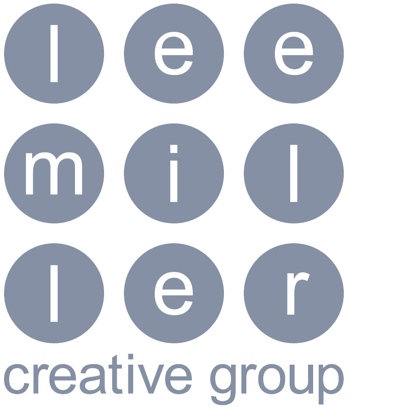
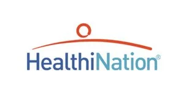
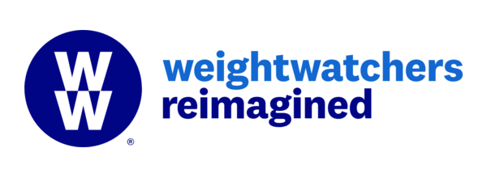
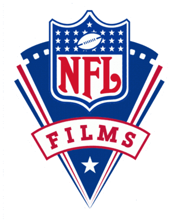
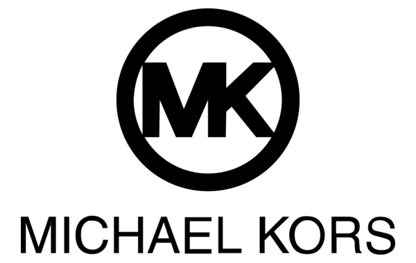
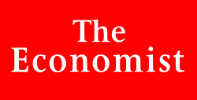
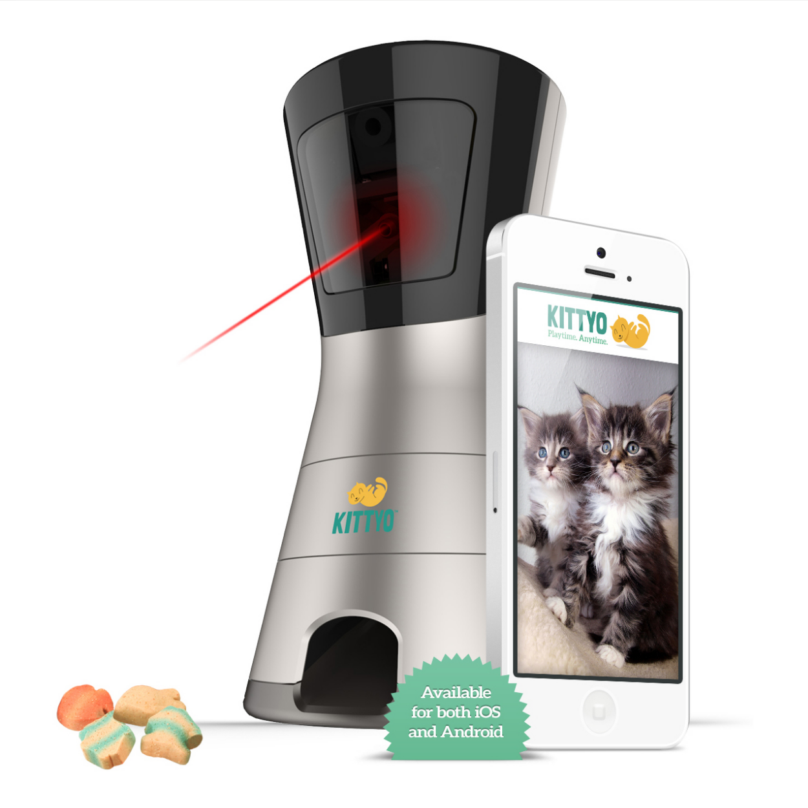

Labcorp
Creative direction · Video · Animation
View case study ↗
Senior creative direction and production, from first idea through final delivery.
Selected work
Ideas through execution
Selected clients
Trusted by discerning teams
A small, founder-led creative company for organizations of every size.










What clients say
In their words
“As a partner at AKPD Message and Media, I tapped LMC on a host of projects over the years. Whether it was filming, editing, or graphic design, I saw the team’s passion for their craft – and their willingness to make big things happen, often under very tight deadlines. They demonstrated a real understanding of our campaigns’ core missions, which helped make the final product not just visually compelling, but also effective in moving voters in our direction.”
“Lee Miller Creative was an exceptional collaborator on our organization’s video project. Their expertise was evident throughout the entire process, from providing feedback on our script to conducting meaningful interviews to creating the final video.”
“We hired Lee to produce 11 informative and multilingual videos for consumers in a very short amount of time. He and his team were extremely professional, creative and fast. Under Lee’s leadership, every step of the process was very smooth and we were extremely happy with the final products.”
“Lee quickly understood our goals and brought creativity, patience, and keen understanding of our mission to the project. The creative was fresh, the messaging on target, and the campaign helped us instantly connect with our target audience.”

Podcast case study
A complete original podcast brand: identity, four episodes, graphics, sound design, music, and an on-location documentary.
View case study →Founder story
From idea to international brand: product development, identity, film, digital, crowdfunding and press.
View case study →
What we do
Lee Miller Creative takes complex communications projects from the first conversation through final delivery – shaping the idea, assembling the right collaborators and keeping every moving part moving.
Creative direction · Video + animation · Design + branding · Integrated production